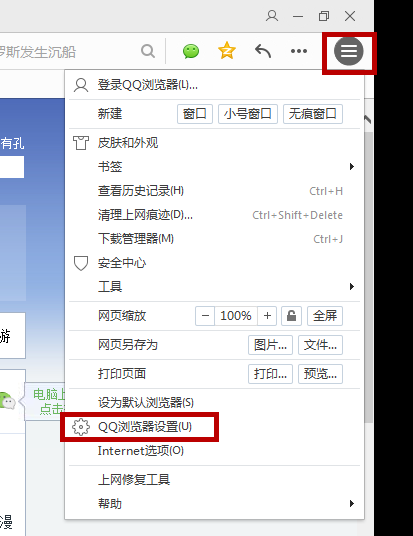
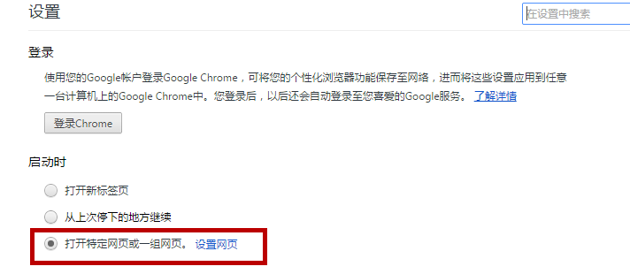

如何把学习时代设为您的上网主页？
您的浏览器可能不支持自动设置主页。请参考以下步骤，设置学习时代为您的上网主页。
1.点击"工具"菜单，选择"internet选项"。

2.在输入框输入：www.xuexisd.com，点击确定，设置成功。
提示：如果无法设置学习时代为您的上网主页，可能您的浏览器已中毒，请先查杀病毒。
1.点击"工具"菜单， 选择"选项"

2.在启动时打开一栏,选择"修改主页"按钮。

3.在输入框中输入"www.xuexisd.com"，点击确认，设置成功。
提示：如果无法设置学习时代为您的上网主页，可能您的浏览器已中毒，请先查杀病毒。
1.点击"工具"菜单，选择"遨游设置中心"。
2.在"主页"栏目输入"www.xuexisd.com" ， 点击"应用"，设置成功。
提示：如果无法设置学习时代为您的上网主页，可能您的浏览器已中毒，请先查杀病毒。
1.点击"工具"菜单，选择"搜狗高速浏览器选项"。

2.点选"自定义网址"，并在输入框内输入"www.xuexisd.com"，设置成功。

提示：如果无法设置学习时代为您的上网主页，可能您的浏览器已中毒，请先查杀病毒。
1.点击浏览器右上角"常用菜单"按钮，选择"QQ浏览器设置"。

2.点选"自定义网址"选项，输入"www.xuexisd.com"，点击"确定"，设置成功。
提示：如果无法设置学习时代为您的上网主页，可能您的浏览器已中毒，请先查杀病毒。
1.点击浏览器右上角"菜单"，选择"工具"，"TT选项"。

2.在"TT主页"栏目下输入"www.xuexisd.com" 。 在"启动时"栏目下勾选"打开主页",点击最上面一行"保存"，设置成功。

提示：如果无法设置学习时代为您的上网主页，可能您的浏览器已中毒，请先查杀病毒。
1.点击浏览器菜单栏中的工具按钮，点击"选项"。

2.选择"常规"选项，在"主页"后的框中填入"www.xuexisd.com" ，点击确定。
提示：如果无法设置学习时代为您的上网主页，可能您的浏览器已中毒，请先查杀病毒。
1.点击浏览器右上角“自定义”按钮，选择“设置”

2.点选“打开特定网页或一组网页”，点击“设置网页”

3.在添加新网页后输入：www.xuexisd.com，点击其他地址后"X"，最后点击“确定”
提示：如果无法设置学习时代为您的上网主页，可能您的浏览器已中毒，请先查杀病毒。
1.点击浏览器右上角工具按钮，选择"选项"。
2.在"启动时"项，确认点选"打开主页"。在"主页"，"打开此页"项目后的框中输入"www.xuexisd.com" ，设置成功。
提示：如果无法设置学习时代为您的上网主页，可能您的浏览器已中毒，请先查杀病毒。
1.点击浏览器右上角工具按钮，选择"选项"。
2.在"启用时"项，确认点选"打开主页"。在"主页"，点选"打开此页"，在框中输入"www.xuexisd.com" ，设置成功。
提示：如果无法设置学习时代为您的上网主页，可能您的浏览器已中毒，请先查杀病毒。
1.点击浏览器左上角工具按钮，选择"设置"。
2.点选启动时中的“打开特定网页或一组网页”，点击“设置页面”。
3.在输入框中输入"www.xuexisd.com"，点击确认，设置成功。
提示：如果无法设置学习时代为您的上网主页，可能您的浏览器已中毒，请先查杀病毒。
1.选择"工具"菜单，"设置"。
2.点选启动时中的“打开特定网页或一组网页”，点击“设置网页”。
3.在输入框内输入" www.xuexisd.com" ，点击确定，设置成功。
提示：如果无法设置学习时代为您的上网主页，可能您的浏览器已中毒，请先查杀病毒。
1.点击"编辑"菜单，选择"偏好设置..."

2.点击"常规"选项卡，在主页项输入"www.xuexisd.com" ，设置成功，关闭对话框即可。
提示：如果无法设置学习时代为您的上网主页，可能您的浏览器已中毒，请先查杀病毒。
1.选择"工具"菜单，点击GreenBrowser选项。
2.在左边栏选择"启动/退出"项，点选"自定义主页"并输入"www.xuexisd.com"，点击确定，设置成功。
提示：如果无法设置学习时代为您的上网主页，可能您的浏览器已中毒，请先查杀病毒。

 ， 选择"设置"。
， 选择"设置"。